Fullscreen mode
Just press »F« on your keyboard to show your presentation in fullscreen mode. Press the »ESC« key to exit fullscreen mode.
Overview mode
Press "Esc" or "o" keys to toggle the overview mode on and off. While you're in this mode, you can still navigate between slides, as if you were at 1,000 feet above your presentation.
Python and The Basics of Programming.
Functions
Lesson 5
Author: Egoshkin Danila Igorevichm
Functions (and recursion)
Functions in math
A function -
f(x)=x*x
y(x)=x*x
y=x*x
y(10)=100
----OR-----
f(x)=x*x
f(x){
return x*x
}
outputType f(inputType x){
return x*x
}
Function with args

Function square
Functions in programming
A function - the a small block of code, that performs some operation and runs only when it is called.
#include <iostream>
void hello() // function
{ // {
// ... function body
// }
std::cout << "hello world" << std::endl;
}
int main(){
hello(); // the calling of the function hello()
return 0;
}
Functions in programming - Python
A function - the a small block of code, that performs some operation and runs only when it is called.
import ...
def hello(): # function
# {
# ... function body
# }
print("hello world")
def main():
hello()
if __name__ == "__main__":
main()
Function in C++
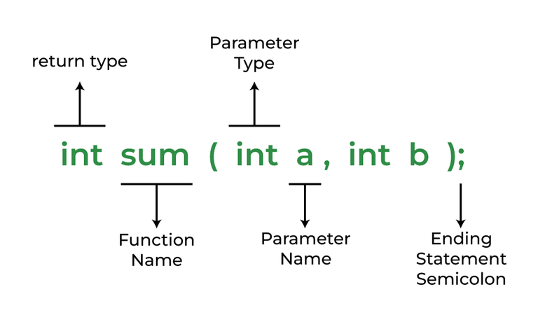Function in Python

Main() function...
#include <iostream>
int main(){ // function main() // output type is int
std::cout << "hello world" << std::endl;
return 0; // returns int 0 value
}
Add player function
#include <iostream>
int main(){
std::cout << "The game for 4 players:" << endl;
std::cout << "Enter the names of you friends:" << endl;
// Data block
char player1[100];
// Input block
std::cout << "Player 1: ";
std::cin >> player1;
// Data block
char player2[100];
// Input block
std::cout << "Player 2: ";
std::cin >> player2;
// Data block
char player3[100];
// Input block
std::cout << "Player 3: ";
std::cin >> player3;
// Data block
char player4[100];
// Input block
std::cout << "Player 4: ";
std::cin >> player4;
return 0;
}
#include <iostream>
int main(){
int array1[5] = {1,2,3,4,5}; // Array 1
for(int i = 0; i < 5; i++){
std::cout << "Array1[" << i+1 << "]: " << array1[i] << "\n";
}
int array2[7] = {1, 2, 3, 4, 5, 6, 7}; // Array 2
for(int i = 0; i < 5; i++){
std::cout << "Array2[" << i+1 << "]: " << array1[i] << "\n";
}
int array3[10] = {1, 2, 3, 4, 5, 6, 7, 8, 9, 10}; // Array 3
for(int i = 0; i < 5; i++){
std::cout << "Array3[" << i+1 << "]: " << array1[i] << "\n";
}
return 0;
}

DRY - Don't repeat yourself
https://en.wikipedia.org/wiki/Don%27t_repeat_yourselfLambda functions, Recursion and Generators
Lambda functions
Lambda functions
Flashback: Ternary operation???
Lambda functions: Ternary operation

Lambda functions: Ternary operation
#include <iostream>
int main(){
condition = true;
int number = condition ? 42 : 13
}
condition = True
number = 42 if condition else 13
print(number)
Ternary operation
looks lambda...
x -> M
f(x) -> M
but: (M is an expression that uses x) https://en.wikipedia.org/wiki/Lambda_calculus
Lambda functions

Lambda functions
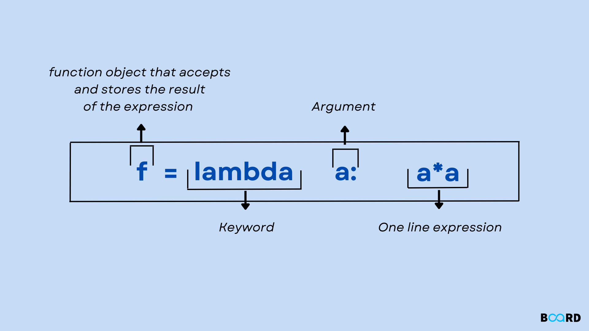Lambda functions
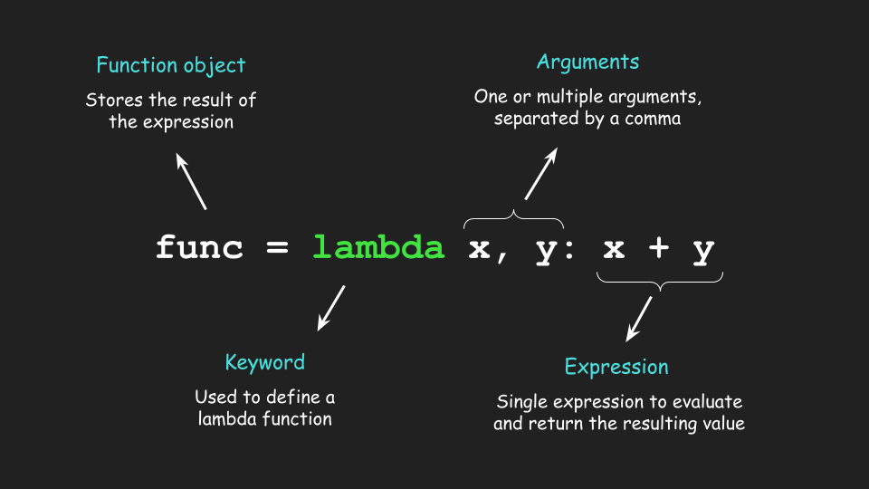Lambda functions: Fish Tanks Volume Ex
# Fish Tanks Volume
def calculateFishTanks():
# Only here we use function 5 times, so make it lambda
pass
volume = lambda x, y, z, type="cm^3": "Volume: " + str(x * y * z) + " " + type
print(volume(10, 15, 20))
Lambda functions == Anonymous functions
Lambda functions are similar to user-defined functions but without a name. They're commonly referred to as anonymous functions. Lambda functions are efficient whenever you want to create a function that will only contain simple expressions – that is, expressions that are usually a single line of a statement.Lambda functions: usage
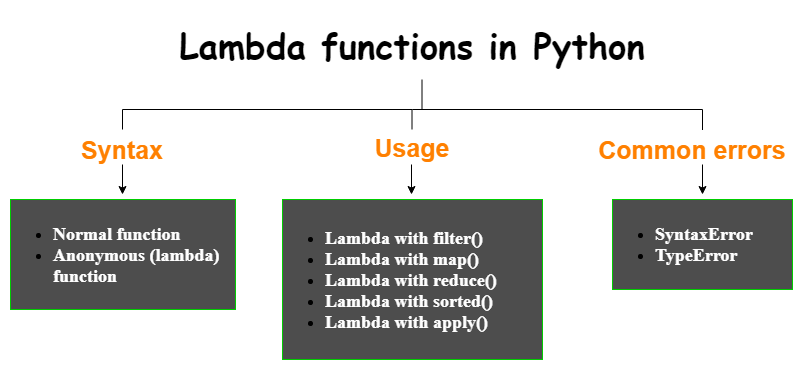Lambda functions: filter example
data = ["rabbit", "chuck", "Joe", "duck", "rock", "joke", "docker", "hope"]
listfilter = list(filter(lambda x: ('k' in x), data))
# Prints ['chuck', 'duck', 'rock', 'joke', 'docker']
print(listfilter)
Recursion
What do you think recursion is?
Quiz: Where the recursion here?
Quiz: Where the recursion here?

Quiz: Where the recursion here?
Quiz: Where the recursion here?

Quiz: Where the recursion here?
Ask Google what recursion isQuiz: Where the recursion here?
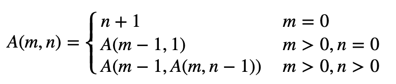https://en.wikipedia.org/wiki/Ackermann_function
Christopher Nolan - Inception (2010)
To understand recursion better, watch this movie..gif)
Portal the game
To understand recursion better, play/watch this game.
Generators

Quiz: What is generated here?

Quiz: What is generated here?
Quiz: What is generated here?

Quiz: What is generated here?

What you can say about generators?
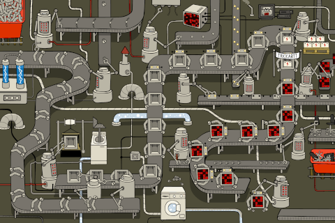Generators vs Iterators
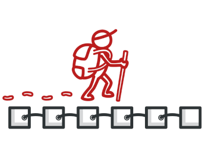Generators vs Iterators
Generators vs Iterators
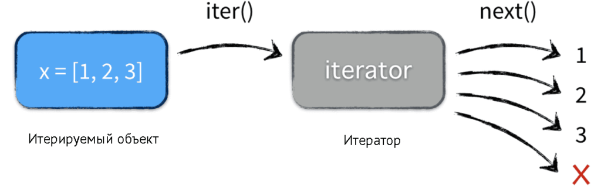Why we cannot use [index]
Why we cannot use [index]
int* a = new int[10]{1,2,3,4,5,6,7,8,9,10};
a+sizeof(int)*index
It is like in FOR

Dead Or Alive - You Spin Me Round
Generators vs Iterators
# list comprehension
doublesGen = (2 * n for n in range(50))
# same as the list comprehension above
doublesList = list(2 * n for n in range(50)) # 0 - 49
Generators
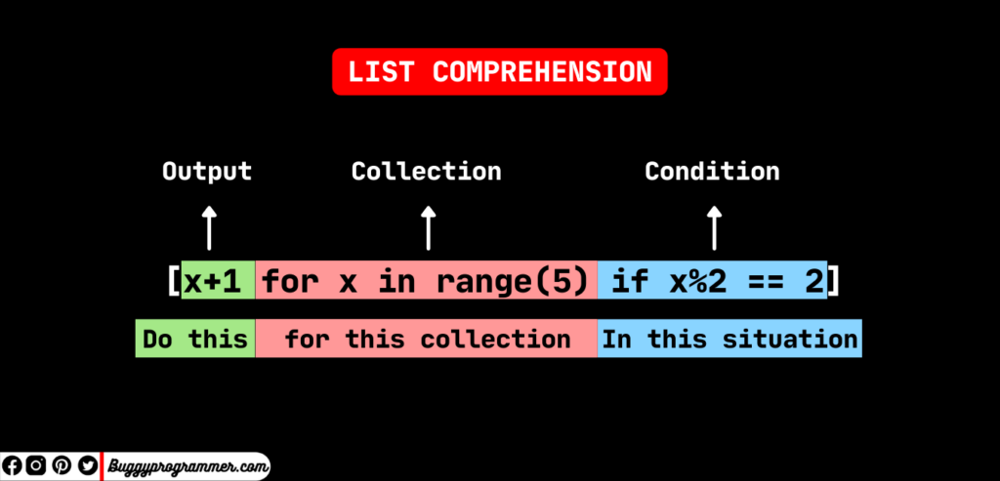Generators
range() & next()import sys
sys.getsizeof([])
Generators Task
1+2+3+4+5+...+95+96+97+98+99+100Generators Task
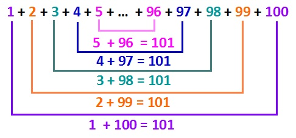Generators Task Gauss
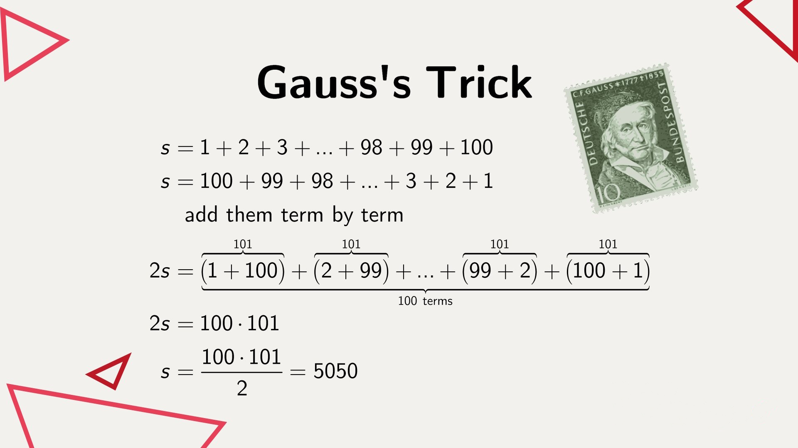Generators Task Gauss
def first_n(n):
'''Build and return a list'''
num, nums = 0, []
while num <= n:
nums.append(num)
num += 1
return nums
sum_of_first_n = sum(first_n(100))
print(sum_of_first_n)
Generators Task Gauss
num, nums = 0, []
nums.append(num)
Generators Task Gauss
yield
Generators Task Gauss
yield ~ returnGenerators: yield
yield
def simpleGeneratorFun():
yield 1
yield 2
yield 3
Generators: yield
yield
# Python Generator Function with Multiple Yield
def testGen():
x = 1
print('First yield')
# Generator function has many yield statements
yield x
x *= 2
print('Second yield')
yield x
x *= 3
print('Last yield')
yield x
# Call the generator
iter = testGen()
# Invoke the first yield
next(iter)
# Invoke the second yield
next(iter)
# Invoke the last yield
next(iter)
Generators Task Gauss
# a generator that yields items instead of returning a list
def firstn(n):
num = 0
while num <= n:
yield num
num += 1
Generators: yield
Jack Black Magic in `yield`Generators: yield
yield
def csv_reader(file_name):
for row in open(file_name, "r"):
yield row
Generators: yield
yield infinity generator :D
def infinite_sequence():
num = 0
while True:
yield num
num += 1
Generators: yield
yield infinity generator :D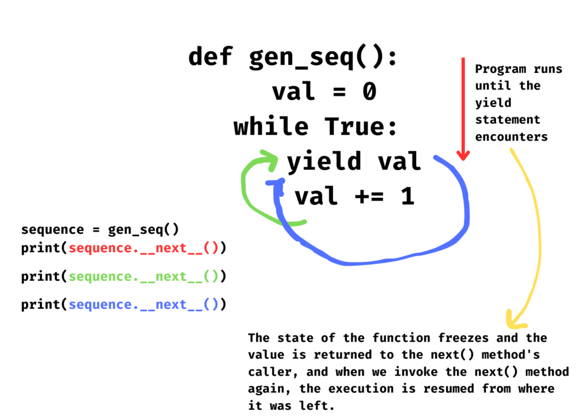
Generators in Math
Recursive sequence with saved precalulated values - saved last step.Generators
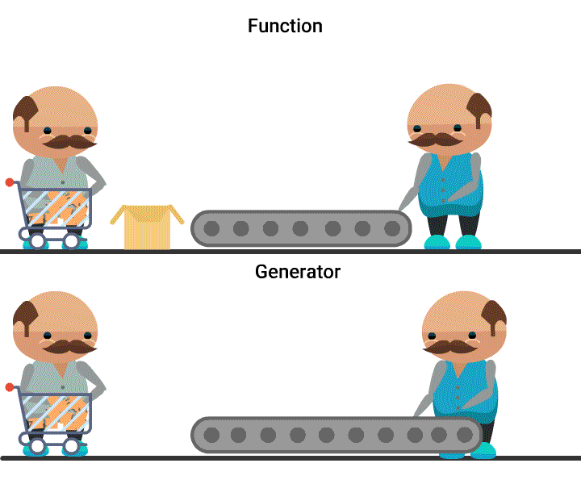Links:
-
Python
- https://www.w3schools.com/python/python_functions.asp
- https://realpython.com/python-pass-by-reference/ C++
- https://www.geeksforgeeks.org/c-functions/
- https://ravesli.com/urok-12-funktsii-i-return/
- https://runestone.academy/ns/books/published/fopp/SimplePythonData/FunctionCalls.html Recursion
- https://www.freecodecamp.org/news/recursion-demystified-99a2105cb871/ Generators:
- https://www.geeksforgeeks.org/generators-in-python/
- https://habr.com/ru/articles/132554/
- https://www.techbeamers.com/python-generator/
- https://wiki.python.org/moin/Generators
- https://geekpython.in/python-generators-with-yield-statement